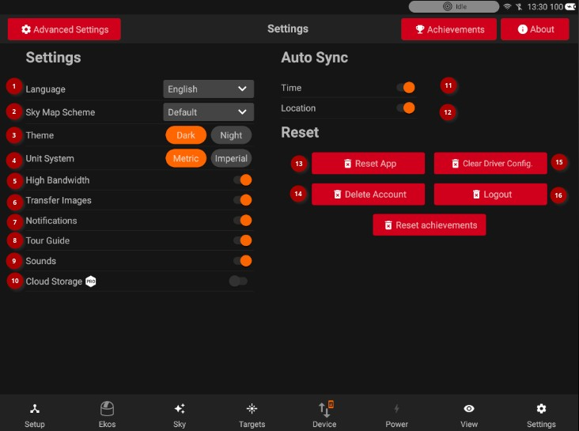
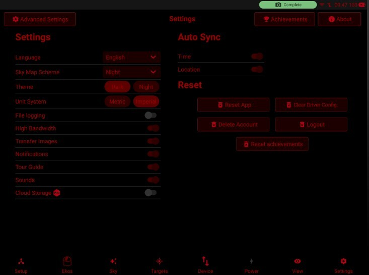
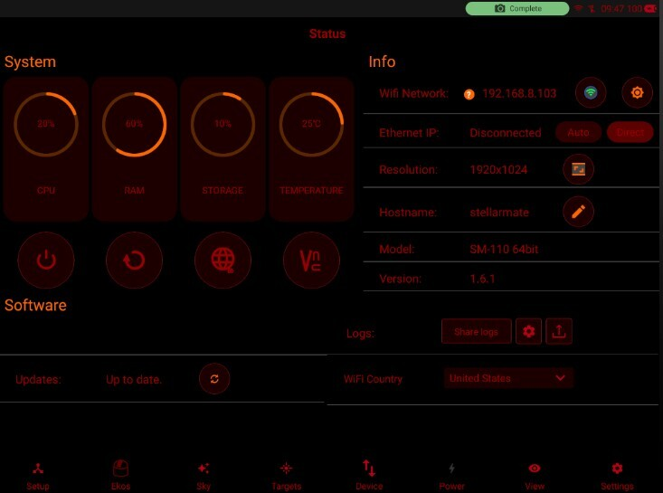

Settings

General Settings
1- Language: Supported Languages are:
- English (Default)
- French
- Spanish
- German
- Chinese
- Japanese
You can help with translating the StellarMate App. Visit the StellarMate App Translations Github repo for more information.
2- Sky Map Scheme: Change the Sky Map color scheme.
3- StellarMate App theme: Please note that if the App theme is changed to Night this automatically switches Sky Map theme as well to Night Theme: Overall App theme.
StellarMate App provides two themes: Dark (default) and Night. When night is toggled, all controls are rendered using a red hue to help with eye adaptations in the dark.


4- Unit System: Unit system used for weather related information. All other units in the App use the Metric System by default unless explicitly mentioned.
5- High Bandwidth: If your WiFi link is slow or suffers from packet losses, toggling high bandwidth to Off might help as it applies more compression to all images to save on bandwidth.
6- Transfer Images: Should only be turned off under special circumstances when network communication is unreliable.
7- Notifications: Toggle in-App notifications.
8- Tour Guide: Toggle to re-enable the App Tour Guide.
9- Sounds: Enable sound notifications, the following events trigger a sound notification:
- When the capture sequence is aborted or completed
- When the Polar Alignment mount position changes
10- Cloud Storage: Toggle saving images in the cloud. Required an active EkosLive Pro Subscription. StellarMate unit needs to have a reliable and fast internet connection for the cloud storage to reliably work. Sequence images are compressed and uploaded to the cloud where they can be viewed at any time from either the App or EkosLive online portal. All the image metadata is preserved in the process which can help in filtering, organizing, and searching for images at any time.
- Pro users can enable the Push notifications. If they are enabled, users will be able to get the notifications on their Tablet device.
- Users who are not subscribed to EkosLive Pro will see a pop up as shown below:
- In order to subscribe, you can follow the link here.

11- Auto-sync Time and Location: When the SM App is started, it syncs tablets time and send to Ekos.
Reset
13- Reset App: Wipes all local data in the StellarMate App. After the reset, restart the App.
14- Delete Account: Delete your account in stellarmate.com. Once deleted, the account and associated data will be permanently deleted.
15- Clear Driver Config: Wipes all INDI driver configuration. Use this only as a last resort.
16- Logout: Sign out of StellarMate App. Only use this if you need to sign in using a different accounts.